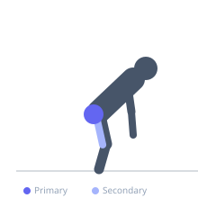
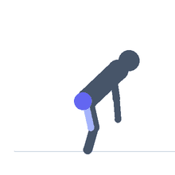

Exercise guide / Machine Glute Kickback
Machine Glute Kickback
The machine glute kickback is performed on a dedicated kneeling kickback machine that pads the back of the ankle and provides resistance as the leg is extended backward. Because both hands and the supporting knee are braced, the lifter can focus entirely on glute contraction without balance demands. The machine provides a smooth, guided resistance curve that isolates the gluteus maximus effectively.
Primary muscles
gluteus maximus
Secondary muscles
biceps femoris long head
Stabilizers
gluteus medius
transverse abdominis
Equipment
T-Bar Row


Starting position
- Kneel on the machine's pad with the working leg's ankle behind the resistance pad. Hold the handles and brace the core.
Setup
- Adjust the pad to sit at the back of the ankle. Set a moderate weight allowing full glute-driven extension.
Steps
- Step 1: Begin with the knee bent at 90 degrees, ankle pad behind the foot.
- Step 2: Extend the working leg backward by squeezing the glute and driving the foot rearward.
- Step 3: Hold at full extension for one second, feeling the glute squeeze.
- Step 4: Return the knee to the starting bent position with control.
Coaching cues
- Squeeze the glute — not the back
- Think of pushing the heel toward the ceiling
- Hips stay square
Breathing
- Exhale during the extension, inhale on return.
Range of motion
- Full hip extension without lumbar hyperextension.
Tempo
- 1-1-2-0 (hold 1s at peak)
Common mistakes
- Using the lower back to extend rather than the glute
- Rushing through reps without a peak contraction
- Hips rotating away from center
Safety
- Keep the lower back neutral — do not hyperextend the spine
Training
- hypertrophy: 12–20 reps
- hypertrophy: 3–4 sets
- Rest: {'hypertrophy': 60}